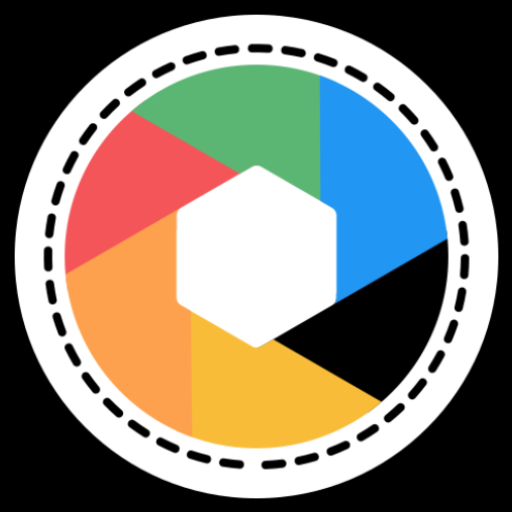

Mobile Cameras Inspired by Film & Professional Photography
We build powerful photography apps for Android — combining manual camera controls, RAW image capture, and vintage film aesthetics into modern mobile tools for creators.
Photography Apps
Professional camera tools and film‑inspired photography apps built for creators.

ROLLO – 35mm Film Camera
Shoot photos with the look of classic film stocks inspired by Kodak, Fuji, and Agfa. Experience the charm and colors of analog photography in a modern mobile camera.
View on Google Play
Manual 2 - Pro Manual Camera
A professional manual camera with full control over ISO, shutter speed, focus, and white balance. Capture high quality RAW photos with DSLR‑style shooting directly from your phone.
View on Google PlayAuraRAW – Pro Manual Camera
A powerful RAW photography camera designed for creators who want maximum image quality and advanced manual shooting controls.
View on Google Play
OldSoul – Film Camera
A nostalgic film camera that recreates the mood and colors of analog photography, encouraging slower and more intentional shooting.
View on Google PlayOur Philosophy
We believe photography apps should empower creators, not overwhelm them with complexity.
Manual Control
Photographers deserve full creative control over exposure, focus, and color. Our apps bring manual photography tools to mobile devices.
Film Inspiration
Many of our apps are inspired by classic film cameras and analog workflows, bringing timeless aesthetics into modern photography.
Simple Tools
Our goal is simple: build fast, intuitive apps that help creators capture moments without unnecessary complexity.
Discover Our Apps
Explore manual cameras, RAW photography tools, and vintage film simulations built for Android creators.
View All Apps on Google Play